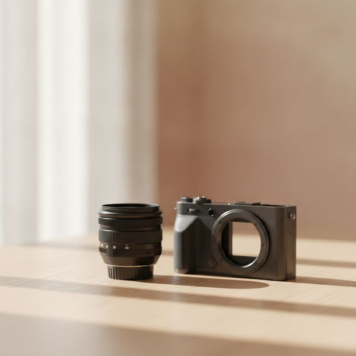
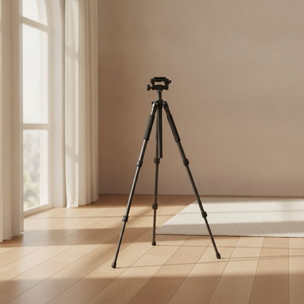
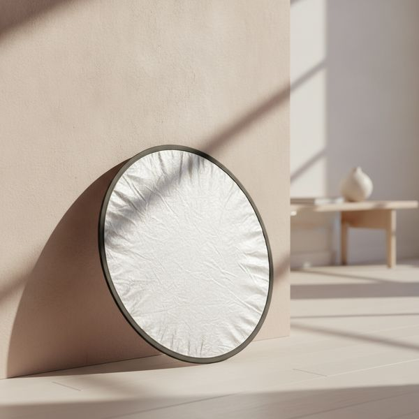
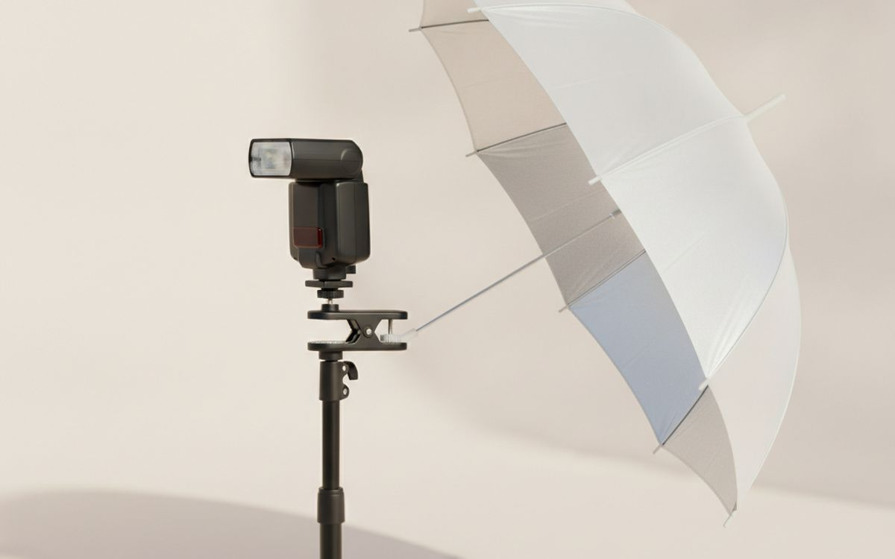
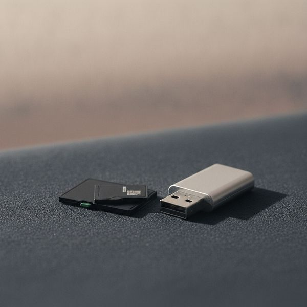
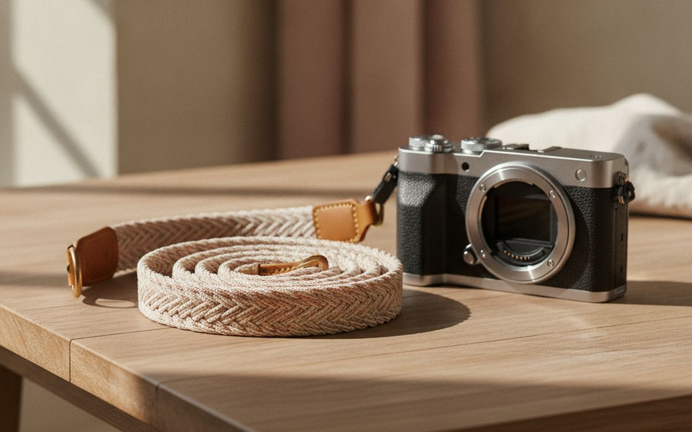
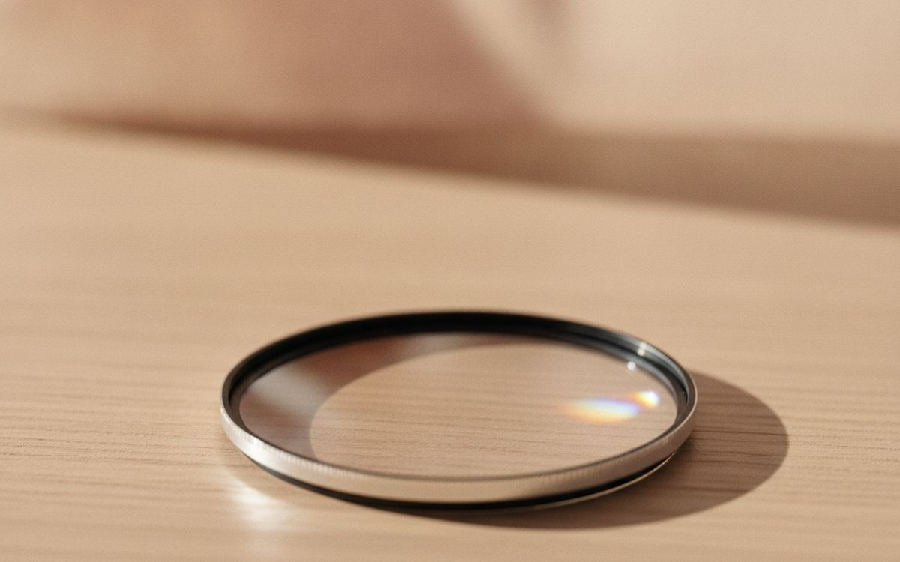
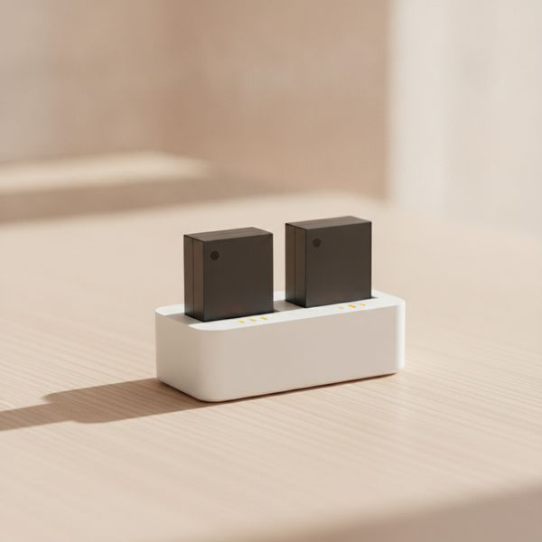
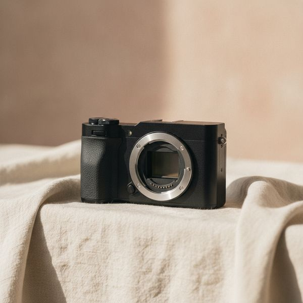
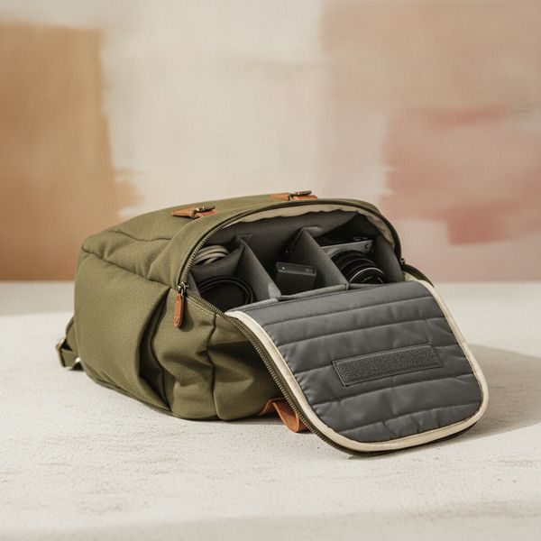

צילום הוא אחד התחביבים הבודדים שבהם אנשים קונים דרך קבע את הדבר הלא נכון קודם. האינסטינקט הוא גוף מצלמה חדש, והתשובה כמעט תמיד היא אור, עדשה או יציבות — בסדר הזה.
מצלמה מתעדת את האור שנמצא מולה. תשנו את האור והתמונה משתנה לגמרי. תשנו את הגוף ותקבלו את אותה תמונה עם צללים קצת יותר נקיים. הרעיון הבודד הזה מסביר את הסדר של כל הרשימה.
המחירים הם הערכה נכון לזמן הכתיבה. לצילום יש שוק יד שנייה בריא במיוחד, ולכמה מהפריטים למטה משומש הוא פשוט הקנייה הטובה יותר — אנחנו מציינים איפה.
בקצרה
עדשת פריים 50 או 35 מ"מ
השדרוג שמשנה תמונות
גילוי נאות. הקישורים בעמוד הזה הם קישורי שותפים. אם תקנו דרכם אנחנו עשויים להרוויח עמלה, בלי תוספת עלות לכם. זה לא משפיע על מה שנכנס לרשימה או על הסדר שלו.
איך בחרנו
אנחנו מדרגים לפי השפעה על התמונה הסופית: קודם אור, אחר כך עדשה, אחר כך יציבות, ואז נוחות. אנחנו נשענים על בדיקות אופטיות שפורסמו, על נוהג מקצועי ועל דיווחים של בעלים לאורך זמן, ולא צילמנו בעצמנו עם כל פריט כאן. איפה שהתשובה הטובה יותר היא יד שנייה, או טכניקה ולא רכישה, נגיד את זה.
השוואה מהירה
המחירים הם הערכה נכון לזמן הכתיבה ומשתנים לעיתים קרובות.
הבחירות

01 · השדרוג שמשנה תמונותעדשת פריים 50 או 35 מ"מ
עדשת פריים מהירה היא הדרך הזולה ביותר לתמונות שנראות שונות ולא רק חדות יותר. צמצם רחב מכניס הרבה יותר אור מעדשת זום סטנדרטית, אז אפשר לצלם בפנים ובשעת דמדומים בלי להעמיס על החיישן, והיא מפרידה נושא מרקע עמוס בצורה ששום עיבוד לא מזייף באמת. אורך המוקד הקבוע הוא פיצ'ר שמחופש למגבלה: חוסר היכולת לזום מכריח אתכם לזוז, והזזה היא מה שמלמד קומפוזיציה. בערך חמש מאות שקל לקפיצה הגדולה ביותר באיכות התמונה שרוב האנשים יעשו אי פעם.
$120–250על מה מוותרים: אין זום — אתם זזים במקומו
בעד
- מאפשרת לצלם בתאורה שעדשת קיט לא יכולה להתמודד איתה
- הפרדת נושא אמיתית, לא פילטר תוכנה
- זולה, במיוחד כמשומשת
נגד
- אין זום — אתם זזים במקומו
- אורך מוקד יחיד לא יתאים לכל סצנה

02 · קנו פעם אחת, וקנו מספיק כבדהחצובה יציבה
חצובה פותחת קטגוריות שלמות של תמונות שפשוט בלתי אפשריות ביד: סצנות לילה, חשיפות ארוכות על מים, פנים חשוך, וכל קומפוזיציה מוקפדת שאתם רוצים לשכלל ולא לחטוף. הטעות היא לקנות זולה, כי חצובה שרועדת ברוח לא עושה כלום ובסוף אתם קונים פעמיים. תשפטו אותה לפי דירוג העומס המוצהר מול העדשה הכבדה ביותר שלכם, והעדיפו ראש כדורי בשביל מהירות. אלומיניום כבד יותר וזול בהרבה מסיבי פחמן; פחמן שווה את זה רק אם אתם סוחבים למרחקים ארוכים.
$100–300על מה מוותרים: חצובות זולות גרועות יותר מלא כלום
בעד
- מאפשרת צילומים שאי אפשר לבצע מהיד
- חצובה טובה מחזיקה מעמד עשורים
- ראש כדורי מאפשר קומפוזיציה מהירה
נגד
- חצובות זולות גרועות יותר מלא כלום
- סיבי פחמן עולים הרבה בשביל חיסכון קטן במשקל

03 · הכי הרבה שיפור לכל שקלמחזיר אור 5 ב-1
זה הפריט הזול ביותר כאן וזה שהכי משפר פורטרטים, כי הוא מתקן את הבעיה האמיתית ברוב התמונות החובבניות — צללים קשים מתחת לעיניים ולסנטר. החזרת האור הקיים אל תוך הצללים לא עולה כלום לכל פריים ולא צריכה סוללות. הצד הלבן הוא זה שתשתמשו בו הכי הרבה; כסף חזק יותר ויכול להיות קשה; הצד השחור נועד להחסיר אור, וזה טריק שימושי באמת שאנשים שוכחים. הקאץ' המעשי הוא שלרוב צריך מישהו שיחזיק אותו, או סטנד, וכדאי לתקצב את זה.
$25–50על מה מוותרים: בדרך כלל דורש זוג ידיים נוסף או סטנד
בעד
- מתקן צללים קשים כמעט בחינם
- בלי סוללות, אין מה שיתקלקל
- מתקפל לתוך תיק
נגד
- בדרך כלל דורש זוג ידיים נוסף או סטנד
- הצד הכסוף יכול ליצור אור קשה ולא מחמיא

04 · כאן תמונות מתחילות להיראות מקצועיותפלאש חיצוני ומשדר
השינוי הבודד שהכי מפריד בין תמונות חובבניות לכאלה שנראות מקצועיות הוא להוציא את האור מהמצלמה. פלאש שמורכב על המצלמה מייצר אור שטוח וחזיתי עם קצוות קשים — מראה הצילום המשפחתי הקלאסי. תזיזו את אותו פלאש מטר אחד הצידה והנושא מקבל צורה ועומק. פלאש ידני זול עם משדר רדיו עושה את זה מצוין; אתם לא צריכים מדידה אוטומטית כדי ללמוד. יש כאן עקומת למידה אמיתית, וחמישים הפריימים הראשונים ייצאו בחשיפה גרועה. זו העקומה התלולה ביותר בעמוד וגם התמורה הגדולה ביותר.
$90–250על מה מוותרים: עקומת למידה אמיתית — צפו לכישלונות בהתחלה
בעד
- הצעד הברור ביותר לקראת תאורה שנראית מקצועית
- פלאשים ידניים הם זולים ומסוגלים לעשות את העבודה מצוין
- עובד בכל מקום, בפנים או בחוץ
נגד
- עקומת למידה אמיתית — צפו לכישלונות בהתחלה
- צריך סטנד ומרכך אור כדי להיות שימושי

05 · לעולם אל תחסכו כאןכרטיסי זיכרון מהירים ואמינים ממותג מוכר
כרטיס זיכרון הוא הרכיב היחיד שיכול לאבד יום עבודה שלם ולא רק לאכזב אתכם, וזירות המסחר מלאות בזיופים עם קיבולת מזויפת שנכשלים ברגע שבאמת ממלאים אותם. קנו ממוכר אמין ולא מהמודעה הזולה ביותר. התאימו את דירוג המהירות למה שאתם מצלמים — לווידאו יש דרישת כתיבה מתמשכת שלסטילס אין, וכרטיס עם מפרט נמוך מדי גורם להקלטה להיעצר באמצע. שני כרטיסים בינוניים עדיפים על אחד גדול, כי אז כשל בכרטיס עולה חצי צילום ולא הכול.
$25–90על מה מוותרים: זיופים נפוצים מאוד בשווקים מקוונים
בעד
- מגן על עבודה שאי אפשר לשחזר
- דירוג המהירות הנכון מונע תקלות הקלטה
- שני כרטיסים קטנים יותר מקטינים את הסיכון בחצי
נגד
- זיופים נפוצים מאוד בשווקים מקוונים
- כרטיסים מקוריים עולים באופן מורגש יותר

06 · שינוי קטן, השפעה לכל היוםרצועת מצלמה נוחה
הרצועה שהגיעה בקופסה היא סרט ניילון דק שמרכז את משקל הגוף והעדשה על קו צר לרוחב הצוואר. אחרי שלוש שעות הליכה אתם מרגישים, והמצלמה מגיעה לתיק, כלומר אתם מפסיקים לצלם — וזו העלות האמיתית. רצועת סלינג רחבה ומרופדת שנושאת את המשקל לרוחב הגוף פותרת את זה. מחברים לשחרור מהיר מאפשרים להעביר רצועה אחת בין גופים ולנתק אותה לעבודה עם חצובה. זול, וזה משנה כמה זמן אתם מוכנים לסחוב מצלמה.
$25–70על מה מוותרים: רצועות סלינג יכולות להסתובב קדימה כשמתכופפים
בעד
- מפזרת את המשקל כדי שתוכלו לסחוב אותה יותר זמן
- חיבור מהיר מאפשר להעביר אותה בין גופים
- זולה ביחס לנוחות שמקבלים
נגד
- רצועות סלינג יכולות להסתובב קדימה כשמתכופפים
- עוד משהו שצריך לנתק כשעובדים עם חצובה

07 · האפקט שאי אפשר להוסיף אחר כךמסנן פולריזציה מעגלי
כמעט כל אפקט של מסנן אפשר לשחזר בעריכה. מסנן פולריזציה לא, כי הוא מסיר פיזית אור מוחזר לפני שהוא מגיע לחיישן. זה אומר חיתוך של סנוור ממים ומזכוכית, ראייה דרך פני נהר, והעמקת שמיים כחולים בצורה ששום סליידר לא באמת משחזר. קנו זכוכית הגונה — מסנן זול שם רכיב אופטי גרוע לפני העדשה הטובה שבדיוק קניתם, וזה מנוגד למטרה. הוא עולה לכם בערך צעד או שניים של אור, אז זה כלי לאור יום, וההשפעה שלו משתנה כשמסובבים אותו ביחס לשמש.
$30–90על מה מוותרים: עולה בסטופ אחד או שניים של אור
בעד
- האפקט היחיד שעריכה לא יכולה לשכפל
- מפחית סנוור ממים, זכוכית ועלים
- מעמיק את צבע השמיים באופן טבעי
נגד
- עולה בסטופ אחד או שניים של אור
- פילטרים זולים פוגעים באיכות של עדשה טובה

08 · לא זוהר, ותצטרכו אותןסוללות רזרביות ומטען כפול
מצלמות ללא מראה מפעילות עינית אלקטרונית ברציפות ושורפות סוללות הרבה יותר מהר מהגופים האופטיים הישנים, ומזג אוויר קר חוצה בערך את מה שתקבלו. שתי רזרביות הן המינימום השפוי ליום שלם. מטען כפול אומר שהכול מוכן בלילה במקום שתטעינו בזה אחר זה ותשכחו את האחרונה. סוללות של צד שלישי בדרך כלל בחצי מחיר ורובן בסדר בפועל, עם ההסתייגות שחלק מהגופים מגבילים פיצ'רים או מציגים אזהרות עם תאים לא רשמיים — שווה בדיקה מהירה למצלמה הספציפית שלכם לפני שקונים ארבע.
$40–90על מה מוותרים: חלק מהמצלמות מגבילות שימוש בסוללות לא רשמיות
בעד
- מצלמות מירורלס מרוקנות סוללות במהירות
- מטען כפול מבטיח שהכל יהיה מוכן בבוקר
- סוללות צד-שלישי הן בדרך כלל בסדר גמור והרבה יותר זולות
נגד
- חלק מהמצלמות מגבילות שימוש בסוללות לא רשמיות
- מזג אוויר קר מקטין את הקיבולת בחצי בערך

09 · איפה לחסוך, לא להוציאגוף מצלמה יד שנייה
גופים מאבדים ערך בחדות ועדשות כמעט לא, וזה אומר לכם לאן הכסף צריך ללכת. גוף בן שלוש שנים זהה מבחינה אופטית בכל מה שחשוב ועולה שבריר ממחיר חדש — השיפורים בחיישנים בין דורות אמיתיים אבל קטנים, ושום שדרוג חיישן לא יציל תמונה עם תאורה גרועה. בדקו את מונה התריס אם יש תריס מכני, בחנו את החיישן לסימנים, וקנו מסוחר עם אחריות ולא מאדם זר. תשקיעו את החיסכון בעדשות, ששומרות על ערכן ועוברות איתכם לגוף הבא.
$300–900 usedעל מה מוותרים: בדקו את מספר הקליקים ואת מצב החיישן
בעד
- ערך של גופים יורד בחדות — תנו למישהו אחר לשלם על זה
- השיפור בחיישנים בין דורות הוא קטן
- משחרר תקציב לעדשות ששומרות על הערך שלהן
נגד
- בדקו את מספר הקליקים ואת מצב החיישן
- לקנייה מאדם פרטי אין אחריות

10 · זול יותר ופחות בולטמחיצה מרופדת במקום תיק מצלמה
תיק מצלמה ייעודי יקר, בדרך כלל נראה כמו תיק מצלמה, ולכן הוא פרסומת לכל מי ששם לב. מחיצה מרופדת עם חוצצים ניתנים להזזה הופכת כל תרמיל שכבר יש לכם לתיק מצלמה ונשלפת כשלא צריך אותה. היא עולה שליש מהמחיר, היא הרבה פחות בולטת בעיר, ואתם לא תקועים עם הארגונומיה של תיק אחד לנצח. מדדו את הגוף עם העדשה הגדולה ביותר מחוברת לפני הקנייה, כי התלונה הנפוצה היא מחיצה שנמוכה בשני סנטימטרים מדי.
$25–60על מה מוותרים: מדדו את העומק כשהעדשה מחוברת
בעד
- הופכת כל תיק שיש לכם לתיק צילום
- הרבה פחות בולטת לעין מתיק ממותג
- שליש מהמחיר של תיק ייעודי
נגד
- מדדו את העומק כשהעדשה מחוברת
- פחות הגנה ממזג אוויר מאשר בתיק אמיתי
שאלות נפוצות
לשדרג גוף מצלמה או לקנות עדשה?
עדשה, כמעט תמיד. עדשות משנות איך תמונה יכולה להיראות; גוף חדש בעיקר משנה כמה נקיים הצללים. עדשות גם שומרות על ערכן ועוברות לגוף הבא שלכם.
האם טלפון מספיק טוב היום?
לאור יום ולשיתוף ברשתות, באמת כן. איפה שמצלמה ייעודית עדיין מנצחת בבירור זה אור נמוך, טווח אופטי אמיתי, הפרדת נושא שאינה מחושבת, ושליטה בתוצאה בעריכה.
מהו אביזר הצילום הכי מוערך יתר על המידה?
מסנני UV שנקנים להגנה, רוב מצחיות העדשה הממותגות שנמכרות בנפרד, ותיקי מצלמה יקרים. מסנן פולריזציה ומחזיר אור יעשו לתמונות שלכם יותר משלושתם ביחד.
האם אני צריך מצלמת פול פריים?
לא. חיישני קרופ מצוינים והעדשות שלהם קטנות, קלות וזולות יותר. פול פריים עוזר באור באמת נמוך ונותן עומק שדה רדוד יותר, אבל זה עידון ולא דרישה.
הדילים של היום
ראו מה מוזל עכשיו.
דילים →← כל המדריכים
איננו שותפים של אמזון ואיננו מרוויחים דבר מקישורים לאמזון. כשותפים של עליאקספרס אנחנו מרוויחים עמלה מרכישות מזכות. המחירים והזמינות נכונים לזמן הפרסום ועשויים להשתנות.